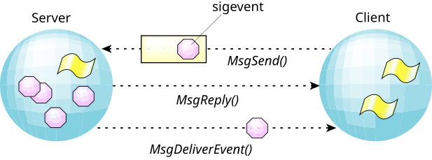

A significant feature in the kernel design for QNX OS is its subsystem for handling events. POSIX and its realtime extensions define a number of asynchronous notification methods (e.g., UNIX signals that don't queue or pass data, POSIX realtime signals that may queue and pass data, etc.).
The kernel also defines additional, QNX OS-specific notification techniques such as pulses. Implementing all of these event mechanisms could have consumed significant code space, so our implementation strategy was to build all of these notification methods over a single, rich, event subsystem.
A benefit of this approach is that capabilities exclusive to one notification technique can become available to others. For example, an application can apply the same queueing services of POSIX realtime signals to UNIX signals. This can simplify the robust implementation of signal handlers within applications.
The event itself can be any of a number of different types:
QNX OS pulses, interrupts, various forms of signals, and forced
unblock
events. Unblock
is a
means by which a thread can be released from a deliberately
blocked state without any explicit event actually being delivered.
Given this multiplicity of event types, and applications needing the ability to request whichever asynchronous notification technique best suits their needs, it would be awkward to require that server processes (the higher-level threads from the previous section) carry code to support all these options.
Instead, the client thread can give a data structure, or
cookie,
called a
sigevent
to the server to hang on to until later.
When the server needs to notify the client thread, it
invokes MsgDeliverEvent(), and the microkernel
sets the event type encoded within the cookie upon the client thread.

For details about the sigevent structure, see its entry in the C Library Reference.
In a deeply embedded system that consists entirely of trusted programs, no safeguards are needed on events, but this isn't true in systems that are more open. A problem with sigevents is that a server can deliver any event to a client, even if the client has never expressed an interest in receiving events.
The client can thus be sure that it gets only the events that it wants, and that no one has tampered with them. For a sample program, see the entry for MsgRegisterEvent() in the C Library Reference.
You can detect when processes use unregistered events using secpolgenerate (via the file /dev/secpolgenerate/errors) or secpolmonitor (when -u is specified).